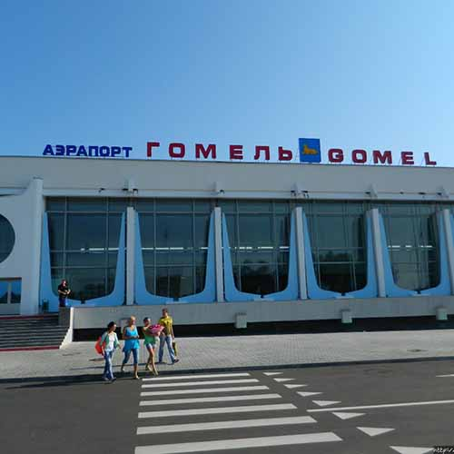
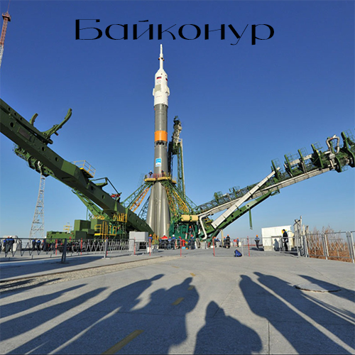

Юрий Алексеевич Гагарин
На корабле «Восток» 12 апреля 1961 года лётчик-космонавт СССР Юрий Алексеевич Гагарин совершил первый в мире пилотируемый полёт в космическое пространство.

Старт корабля состоялся с советского космодрома «Байконур» в 9 часов 7 минут по московскому времени (06:07:00 UTC).
Корабль выполнил один оборот вокруг Земли и совершил посадку в 10 часов 55 минут (07:55:00 UTC) в районе деревни Смеловка Саратовской области.
Откуда произведен первый запуск ракеты в космос?

